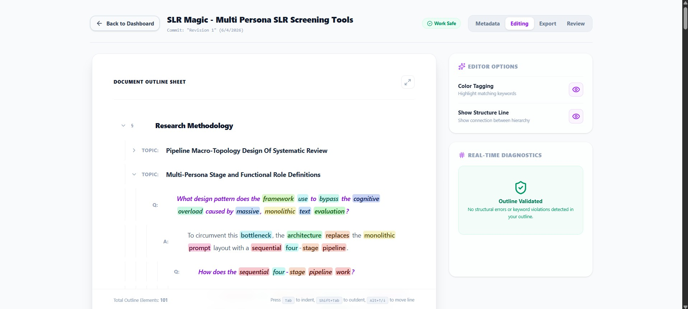
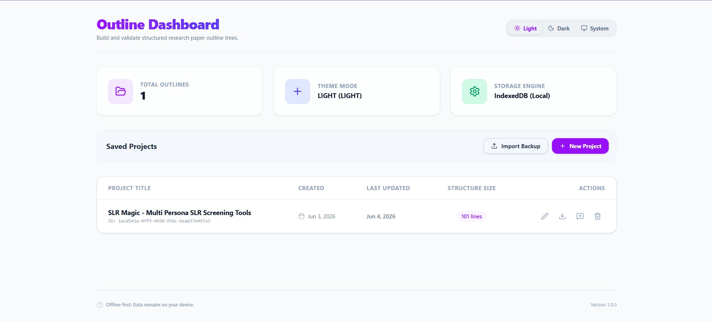
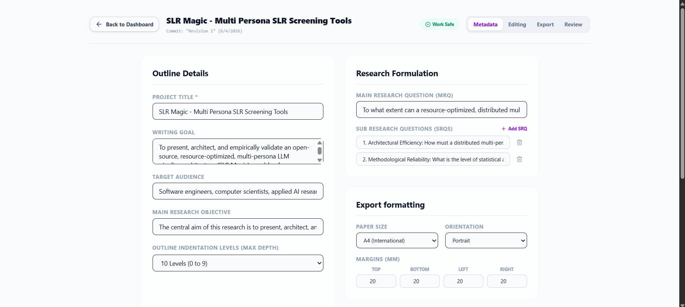
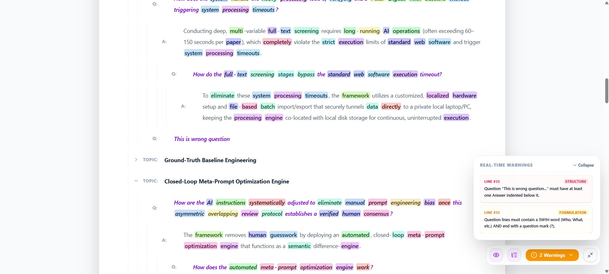
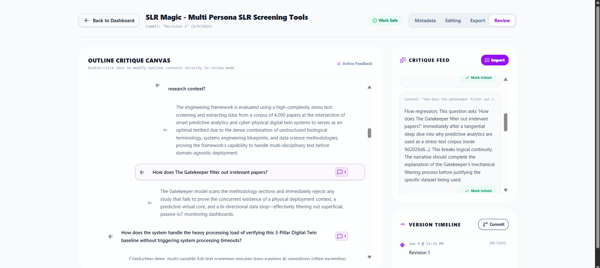
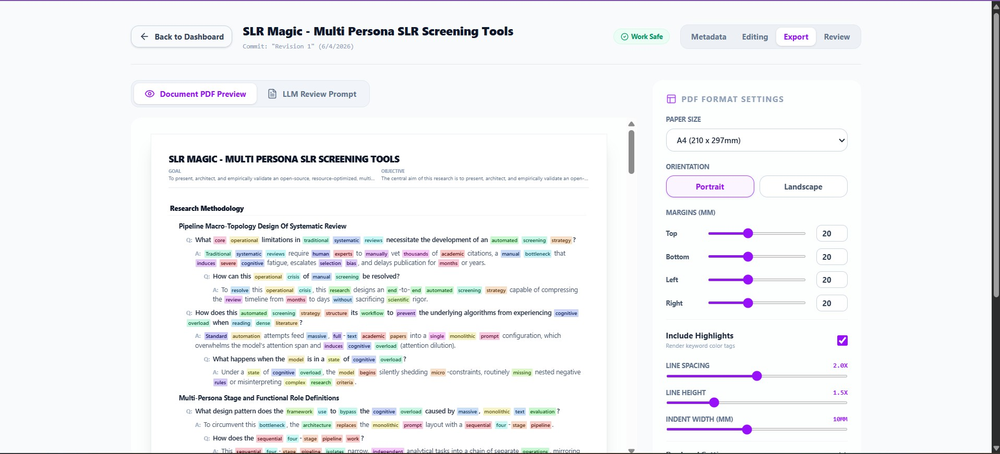

Stop fighting document layout formatting. Enforce strict hierarchy, trace logical keyword chaining, paste AI critiques side-by-side, and print beautiful vector PDFs. All 100% offline in your browser.

Outliner goes beyond general text editors. It translates research outlines into strict logical blocks and validates them in real-time.
Strict tree validation rules mapping nodes to Section, Topic, Question, and Answer. Ensures every Question is paired with corresponding Answers, keeping your narrative complete.
Checks semantic flow between consecutive outline nodes by tracing shared keywords. Instantly flags gaps or conceptual drift, visually mapping repetitive phrases using color badges.
Customize document templates down to the details. Control global and level-specific margins, indentations, line spacings, and heights, outputting clean, native vector PDFs.
Explore the workspace interfaces designed to steer research outline formulation from initialization to validation.

Create new outline documents, review details, and delete drafts. Back up entire projects to standard JSON formats (`.otln-project`) or restore snapshots securely with zero server tracking.

Configure parameters before outlining. Set writing targets, audience profiles, research objectives, main research questions (MRQs), and a list of sub research questions (SRQs) to anchors focus.
Write outlines using a borderless nested canvas. Use `Tab`/`Shift+Tab` to indent/outdent rows, immediately translating them between Section, Topic, Question, and Answer. Focus elements to overlay active action items.

Maximize your outline canvas. Features a bottom control dock to toggle structure guide lines, and a collapsible real-time diagnostics card stream listing structure checks and phrasing issues.

Export comprehensive prompts, fetch critique from an LLM, and paste feedback directly. Reviews parse into gutter badges alongside nodes, showing active comment cards that can be resolved one-by-one.

Symmetrically adjust physical sheet margins, orientations, and dimensions. Override specific levels to toggle colored keyword markers or custom line heights, printing vector PDFs on a live mockup canvas.
Your ideas belong to you. Outliner implements strict offline-first database mechanics to ensure zero server leakages or cloud tracking, while conforming to the four pillars of open research data.
Every outline, revision checkpoint, and comment cards map unique UUID coordinates in IndexedDB, facilitating exact indexing.
Works completely offline. Served as standard responsive static files, guaranteeing immediate availability without internet connections.
Outline models export to standard, beautifully indented `.json` schemas. Project backups save in portable database structures.
Easily migrate data. Import and export outlines repeatedly across systems. Re-examine history pipelines without platform locks.
Experience a better way to plan academic research papers. Define objective questions, track keyword chaining, copy LLM reviews, and print clean layouts.
Launch the Outliner Editor